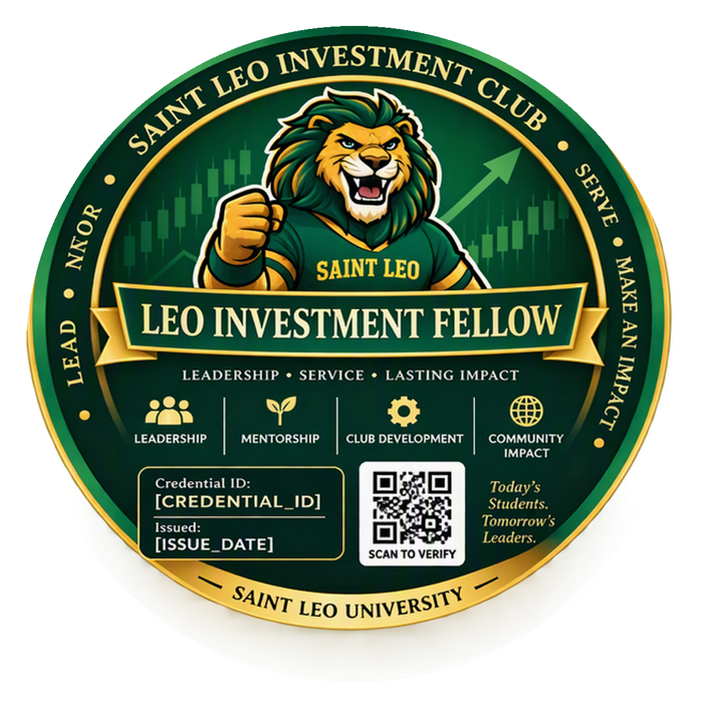

Finance Explorer
Initial intentional engagement with finance education and industry programming.
View criteriaVerified co-curricular achievement in investment education, professional engagement, applied analysis, and leadership.
Initial intentional engagement with finance education and industry programming.
View criteriaSustained engagement with alumni, employers, and finance professionals.
View criteriaApplied investment analysis backed by evidence and professional communication.
View criteria
Distinguished leadership, mentorship, service, and lasting contribution.
View criteria